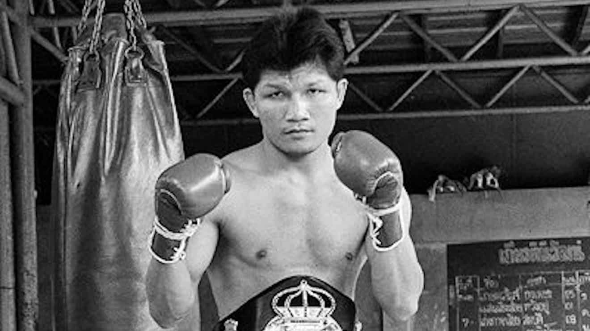

Khaosai Galaxy made his professional debut in 1980 and soon became one of the most feared punchers in boxing. Hailing from Thailand, Galaxy quickly made a name for himself in the bantamweight division, known for his thunderous knockout power and relentless style. His debut marked the start of an incredible career that would see him dominate the division for years.
One of Galaxy's most legendary fights came in 1986 when he defended his WBA Bantamweight title against Betulio González. The fight was an all-out war, but Galaxy's relentless pressure and knockout power overwhelmed González, cementing his legacy as one of the greatest bantamweights in history.
In 1987, Galaxy defended his title against Rolando Bohol. The fight showcased Galaxy's incredible stamina and devastating power, as he retained his title in a thrilling contest that solidified his reputation as a fighter who could take on anyone in the bantamweight division.
Khaosai Galaxy reigned supreme in the bantamweight division, defending his title successfully for over 7 years. With a staggering knockout rate, Galaxy became a true icon in Thailand and around the world, known for his explosive power and his ability to end fights in dramatic fashion.
Despite his undefeated record and dominant reign, Khaosai Galaxy's career had its challenges. He faced many tough contenders, including the legendary Betulio González and Rolando Bohol, who pushed him to the limit. Additionally, the pressure of maintaining a long reign and dealing with injuries in later years were obstacles Galaxy had to navigate. His eventual loss in 1991 marked the end of an era for bantamweight boxing, but his legacy lives on.